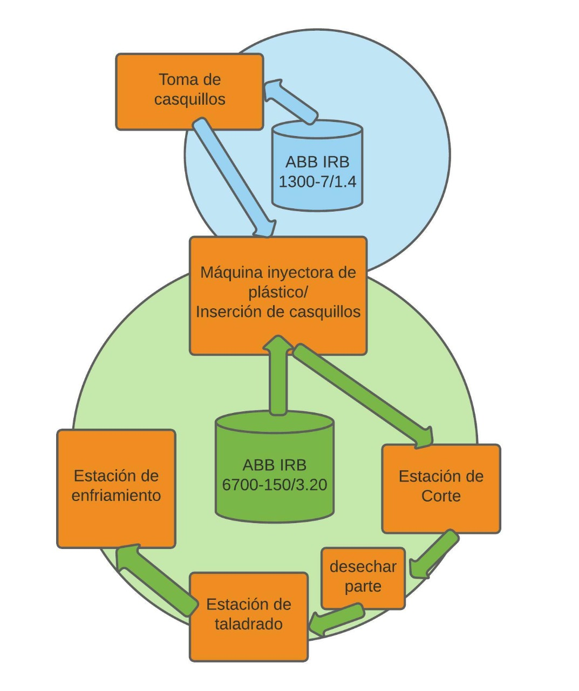

Diseño de la Celda Robotizada
- Se realizó un estudio preliminar de la planta y la secuencia mostrada en el video: "KUKA Robots for Plastics Industry Oct 2013", con el cual se lograron identificar características propias del proceso, cantidad de robots utilizados, protocolo de funcionamiento y de seguridad presentes en la celda.
- Se realizó la identificación y caracterización de los procesos y elementos expuestos durante el proceso, verificando el flujo de material y el espacio de trabajo utilizado.
- Se procedió a hacer una selección de los elementos que contiene la planta, tales como inyector, ventosas, robots, piezas, etc...
- Se realizó una propuesta para aplicación de una celda robótica similar a la expuesta en el video, intentando asemejar el modelo propuesto en el recurso ya mencionado.
- Estación de corte: El robot 1 toma la pieza de plástico a través de ventosas y la lleva hasta la sección de corte, en donde la pieza se posicióna de forma que se realiza un corte a través de unas pinzas, luego de ello el robot 1 mueve la pieza nuevamente de tal forma que las pinzas realicen un segundo corte.
- Estación de Fresado: El robot 1 emrende una nueva trayectoria con la pieza para llevarla a la estación de fresado, allí se realiza un agujero en la pieza en la posición 1, posteriormente el robot 1 mueve la pieza nuevamente y la acomoda en la posición 2 para que se realice un segundo fresado en la misma.
- Estación de inserción de casquillos: En esta etapa el robot 2 toma los casquillos metálicos de la unidad de suministro, luego de esto los lleva a la pieza de plástico y realiza la inserción de los mismos.
- Finalmente, se implementa la propuesta de diseño en Robotstudio y se evalúa su factibilidad y desempeño.
- En el layout realizado en Robot Studio se evidencian requerimientos de seguridad tales como que se delimitan las áreas de trabajo de los robots y el flujo de material/componentes del robot para prevenir colisiones durante el movimiento y limitar el acceso del personal teniendo en cuenta el alcance de los robots y el movimiento de las piezas mientras se ejecutan las tareas para prevenir accidentes.
Teniendo en cuenta el proceso descrito se llegó al siguiente flujo de proceso:

Existen entonces 3 etapas principales, la primera en la Estación de corte tiene como objetivo realizar dos cortes a la pieza haciendo uso de pinzas, la segunda en la estación de taladrado se realizan dos fresados en la pieza y la tercera es la estación de inserción de casquillos, operación de instalación de casquillos metálicos en la pieza de plástico. Cada etapa se describe a detalle a continuación.